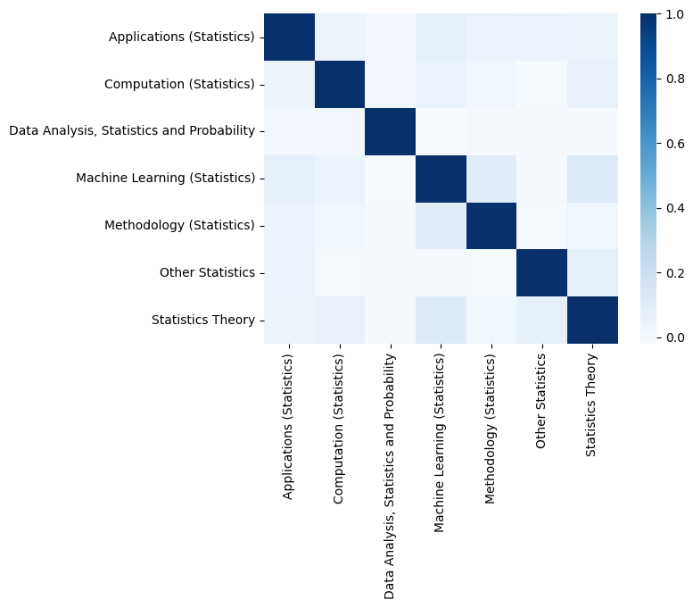
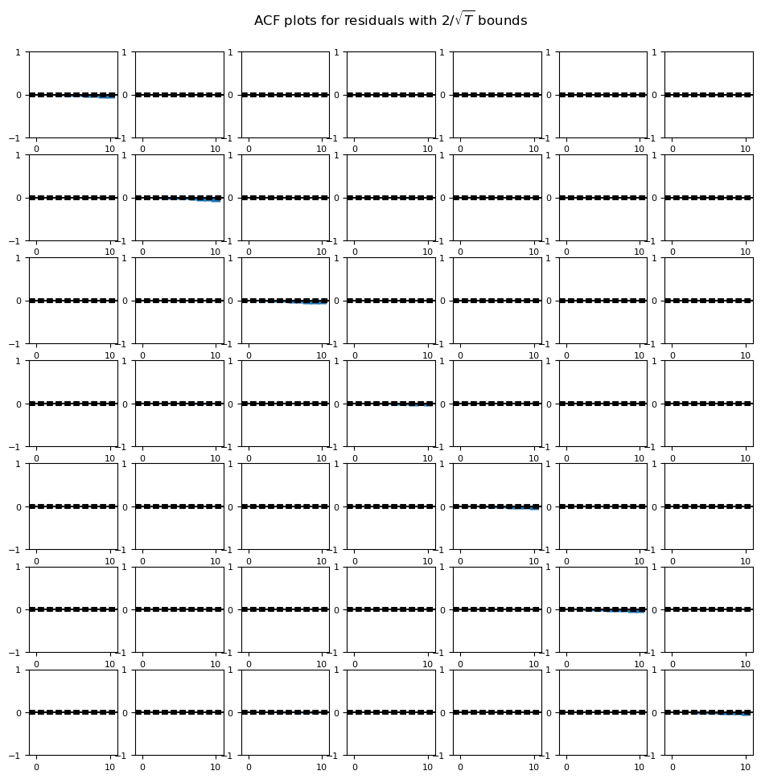
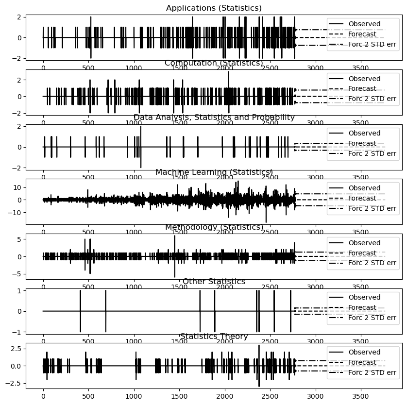

import numpy as np
import pandas as pd
import sklearn as sk
import statsmodels.api as sm
import plotly.express as px
import statsmodels.tsa.api
from statsmodels.tsa.api import VARNotebook for statistical research analysis
To-do list for this
Question 1: What statistical fields have seen the largest increase in publications?
- Rate of change
- Look at different time frames ### Question 2: How have the most published statistical fields changed over time?
- Ordering by count, top 3-5 (variable based on observation)
- Try to find external sources and link to developments ### Question 3: What statistical fields are projected to grow the most in the coming years?
- Little bit of modeling
- Also look at recent rates of change and trend analysis
stats_data = pd.read_csv('stats_data.csv')Question 1
cat_year_num = stats_data.groupby(['category', 'year']).count()['Unnamed: 0'].reset_index()
cat_year_num.rename(columns={'Unnamed: 0': 'count'}, inplace=True)
print(pd.unique(cat_year_num.category))['Applications (Statistics)' 'Computation (Statistics)'
'Data Analysis, Statistics and Probability'
'Machine Learning (Statistics)' 'Methodology (Statistics)'
'Other Statistics' 'Statistics Theory']#Saving colors for each topic for later
default = px.colors.qualitative.Plotly
color_dict = {'Applications (Statistics)': default[0], 'Computation (Statistics)':default[1], 'Data Analysis, Statistics and Probability':default[2],'Machine Learning (Statistics)':default[3], 'Methodology (Statistics)':default[4], 'Other Statistics':default[5], 'Statistics Theory':default[6]}Bar plots for individual statistical topics
top = 'Applications (Statistics)'
px.bar(cat_year_num.query("category == @top"), x = 'year', y = 'count', title= top + " Papers by Year", color_discrete_sequence=[color_dict[top]])Unable to display output for mime type(s): application/vnd.plotly.v1+jsontop = 'Computation (Statistics)'
px.bar(cat_year_num.query("category == @top"), x = 'year', y = 'count', title= top + " Papers by Year", color_discrete_sequence=[color_dict[top]])Unable to display output for mime type(s): application/vnd.plotly.v1+jsontop = 'Data Analysis, Statistics and Probability'
px.bar(cat_year_num.query("category == @top"), x = 'year', y = 'count', title= top + " Papers by Year", color_discrete_sequence=[color_dict[top]])Unable to display output for mime type(s): application/vnd.plotly.v1+jsontop = 'Machine Learning (Statistics)'
px.bar(cat_year_num.query("category == @top"), x = 'year', y = 'count', title= top + " Papers by Year", color_discrete_sequence=[color_dict[top]])Unable to display output for mime type(s): application/vnd.plotly.v1+jsontop = 'Methodology (Statistics)'
px.bar(cat_year_num.query("category == @top"), x = 'year', y = 'count', title= top + " Papers by Year", color_discrete_sequence=[color_dict[top]])Unable to display output for mime type(s): application/vnd.plotly.v1+jsontop = 'Other Statistics'
px.bar(cat_year_num.query("category == @top"), x = 'year', y = 'count', title= top + " Papers by Year", color_discrete_sequence=[color_dict[top]])Unable to display output for mime type(s): application/vnd.plotly.v1+jsontop = 'Statistics Theory'
px.bar(cat_year_num.query("category == @top"), x = 'year', y = 'count', title= top + " Papers by Year", color_discrete_sequence=[color_dict[top]])Unable to display output for mime type(s): application/vnd.plotly.v1+jsonCalculating percent increases per subtopic and identifying the max output and its associated year
topics = pd.unique(cat_year_num.category)topicsarray(['Applications (Statistics)', 'Computation (Statistics)',
'Data Analysis, Statistics and Probability',
'Machine Learning (Statistics)', 'Methodology (Statistics)',
'Other Statistics', 'Statistics Theory'], dtype=object)cat_year_num.query('category == @topics[0]')['count'].pct_change()0 NaN
1 1.000000
2 0.000000
3 -0.500000
4 1.000000
5 4.000000
6 -0.700000
7 1.000000
8 1.000000
9 1.916667
10 -0.314286
11 0.291667
12 0.225806
13 0.289474
14 -0.571429
15 -0.238095
16 -0.312500
17 0.272727
Name: count, dtype: float64pct_change = cat_year_num.groupby(['category'])['count'].pct_change() * 100
cat_year_num['pct'] = pd.Series(pct_change)
cat_year_num| category | year | count | pct | |
|---|---|---|---|---|
| 0 | Applications (Statistics) | 2007 | 1 | NaN |
| 1 | Applications (Statistics) | 2008 | 2 | 100.000000 |
| 2 | Applications (Statistics) | 2009 | 2 | 0.000000 |
| 3 | Applications (Statistics) | 2010 | 1 | -50.000000 |
| 4 | Applications (Statistics) | 2011 | 2 | 100.000000 |
| ... | ... | ... | ... | ... |
| 107 | Statistics Theory | 2020 | 39 | -11.363636 |
| 108 | Statistics Theory | 2021 | 10 | -74.358974 |
| 109 | Statistics Theory | 2022 | 10 | 0.000000 |
| 110 | Statistics Theory | 2023 | 2 | -80.000000 |
| 111 | Statistics Theory | 2024 | 1 | -50.000000 |
112 rows × 4 columns
for x in topics:
fig = px.line(cat_year_num.query("category == @x"), x = "year", y = "pct", color_discrete_sequence=[color_dict[x]], title="Percentage change in publication count: " + x)
fig.show()Unable to display output for mime type(s): application/vnd.plotly.v1+jsonUnable to display output for mime type(s): application/vnd.plotly.v1+jsonUnable to display output for mime type(s): application/vnd.plotly.v1+jsonUnable to display output for mime type(s): application/vnd.plotly.v1+jsonUnable to display output for mime type(s): application/vnd.plotly.v1+jsonUnable to display output for mime type(s): application/vnd.plotly.v1+jsonUnable to display output for mime type(s): application/vnd.plotly.v1+jsonpx.line(cat_year_num, x = "year", y = "pct", color='category', facet_col='category',title="Percentage change in publication count: All topics")Unable to display output for mime type(s): application/vnd.plotly.v1+jsonavg_pct_growth = cat_year_num.groupby(['category'])['pct'].mean().reset_index()
px.bar(avg_pct_growth, x = 'category', y = 'pct', color='category', title = "Average percentage growth (year to year) by subfield")Unable to display output for mime type(s): application/vnd.plotly.v1+jsoncount_groups = cat_year_num.groupby('category').agg(first=('count', 'first'), last=('count', 'last'))
count_groups['ratio'] = count_groups['last'] / count_groups['first']
count_groups = count_groups.reset_index()
count_groups| category | first | last | ratio | |
|---|---|---|---|---|
| 0 | Applications (Statistics) | 1 | 14 | 14.000000 |
| 1 | Computation (Statistics) | 3 | 14 | 4.666667 |
| 2 | Data Analysis, Statistics and Probability | 1 | 1 | 1.000000 |
| 3 | Machine Learning (Statistics) | 21 | 645 | 30.714286 |
| 4 | Methodology (Statistics) | 4 | 87 | 21.750000 |
| 5 | Other Statistics | 1 | 1 | 1.000000 |
| 6 | Statistics Theory | 1 | 1 | 1.000000 |
#Comparing the 2024 paper counts vs the first paper publication year's counts
px.bar(count_groups, x = 'category', y = 'ratio', color='category', title="Ratio of 2024 paper count to initial paper count")Unable to display output for mime type(s): application/vnd.plotly.v1+jsonQuestion 2
How have the top fields changed? Look at the top categories per year in paper output
top_4 = cat_year_num.groupby('year').apply(lambda x: x.nlargest(4, 'count')).reset_index(drop=True)
top_4/tmp/ipykernel_117494/3017204090.py:1: DeprecationWarning:
DataFrameGroupBy.apply operated on the grouping columns. This behavior is deprecated, and in a future version of pandas the grouping columns will be excluded from the operation. Either pass `include_groups=False` to exclude the groupings or explicitly select the grouping columns after groupby to silence this warning.
| category | year | count | pct | |
|---|---|---|---|---|
| 0 | Statistics Theory | 2005 | 1 | NaN |
| 1 | Machine Learning (Statistics) | 2007 | 21 | NaN |
| 2 | Statistics Theory | 2007 | 8 | 700.000000 |
| 3 | Methodology (Statistics) | 2007 | 4 | NaN |
| 4 | Applications (Statistics) | 2007 | 1 | NaN |
| ... | ... | ... | ... | ... |
| 68 | Computation (Statistics) | 2023 | 5 | -54.545455 |
| 69 | Machine Learning (Statistics) | 2024 | 645 | 25.486381 |
| 70 | Methodology (Statistics) | 2024 | 87 | 47.457627 |
| 71 | Applications (Statistics) | 2024 | 14 | 27.272727 |
| 72 | Computation (Statistics) | 2024 | 14 | 180.000000 |
73 rows × 4 columns
px.bar(top_4, x = 'year', y = 'count', color='category', title="Top 4 categories by paper output: All years")Unable to display output for mime type(s): application/vnd.plotly.v1+jsonFor scaling reasons, I will break up the time span into chunks
px.bar(top_4.query('year <= 2011'), x = 'year', y = 'count', color='category', title="Top 4 categories by paper output: Up until 2011")Unable to display output for mime type(s): application/vnd.plotly.v1+jsonYear - topics in order (G to L)
- 2005 : Statistics Theory
- 2006 : NA
- 2007 : Machine Learning, Statistics Theory, Methodology, Applications
- 2008 : Machine Learning, (TIE) Statistics Theory and Methodology, Computation
- 2009 : Machine Learning, Statistics Theory, Methodology, Computation
- 2010 : Machine Learning, Methodology, TIE (Statistics Theory and Computation)
- 2011 : Machine Learning, Methodology, Computation, Applications
px.bar(top_4.query('year >= 2011 & year <= 2015'), x = 'year', y = 'count', color='category', title="Top 4 categories by paper output: 2011 - 2015")Unable to display output for mime type(s): application/vnd.plotly.v1+json- 2012 : Machine Learning, Methodology, Statistics Theory, Computation
- 2013 : Machine Learning, Methodology, Computation, Applications
- 2014 : Machine Learning, Methodology, Computation, Statistics Theory
- 2015 : Machine Learning, TIE (Methodology and Computation), Applications
px.bar(top_4.query('year >= 2015 & year <= 2020'), x = 'year', y = 'count', color='category', title="Top 4 categories by paper output: 2015 - 2020")Unable to display output for mime type(s): application/vnd.plotly.v1+json- 2016 : Machine Learning, Methodology, Applications, Computation
- 2017 : Machine Learning, Methodology, Aplications, Statistics Theory
- 2018 : Machine Learning, Methodology, Computation, Applications
- 2019 : Machine Learning, Methodology, Statistics Theory, Applications
- 2020 : Machine Learning, Methodology, Applications, Statistics Theory
px.bar(top_4.query('year >= 2020'), x = 'year', y = 'count', color='category', title="Top 4 categories by paper output: 2020 - 2024")Unable to display output for mime type(s): application/vnd.plotly.v1+json- 2021 : Machine Learning, Methodology, Applications, Statistics Theory
- 2022 : Machine Learning, Methodology, Applications, Computation
- 2023 : Machine Learning, Methodology, Applications, Computation
- 2024 : Machine Learning, Methodology, TIE (Applications and Computation)
One definitive top topics list
- 2005 : Statistics Theory
- 2006 : NA
- 2007 : Machine Learning, Statistics Theory, Methodology, Applications
- 2008 : Machine Learning, (TIE) Statistics Theory and Methodology, Computation
- 2009 : Machine Learning, Statistics Theory, Methodology, Computation
- 2010 : Machine Learning, Methodology, TIE (Statistics Theory and Computation)
- 2011 : Machine Learning, Methodology, Computation, Applications
- 2012 : Machine Learning, Methodology, Statistics Theory, Computation
- 2013 : Machine Learning, Methodology, Computation, Applications
- 2014 : Machine Learning, Methodology, Computation, Statistics Theory
- 2015 : Machine Learning, TIE (Methodology and Computation), Applications
- 2016 : Machine Learning, Methodology, Applications, Computation
- 2017 : Machine Learning, Methodology, Aplications, Statistics Theory
- 2018 : Machine Learning, Methodology, Computation, Applications
- 2019 : Machine Learning, Methodology, Statistics Theory, Applications
- 2020 : Machine Learning, Methodology, Applications, Statistics Theory
- 2021 : Machine Learning, Methodology, Applications, Statistics Theory
- 2022 : Machine Learning, Methodology, Applications, Computation
- 2023 : Machine Learning, Methodology, Applications, Computation
- 2024 : Machine Learning, Methodology, TIE (Applications and Computation)
With starting analysis from 2007 (due to the NA for 2006), Machine Learning has been KING with Methodology second and Applications a clear third
Question 3: What statistical fields are projected to grow the most in the coming years?
# Using 2015 as a reference
recent = cat_year_num.query("year >= 2015")
recent_growth = recent.groupby(['category'])['pct'].mean().reset_index()
px.bar(recent_growth, x = 'category', y = 'pct', color = 'category', title='Average yearly growth (percentage) since 2015')Unable to display output for mime type(s): application/vnd.plotly.v1+jsonWe can see recent increases in Methodology and Computation (meaning our assertion of statistical growth being linked to the growth of computation may have some truth)
Time Series Prediction
Our initial stats data we used here was yearly, but for predicting future rates of change in these fields, we want to use all the monthly data from the original dataset.
original = pd.read_parquet("arXiv.parquet")original| id | title | category | category_code | published_date | updated_date | authors | first_author | summary | summary_word_count | |
|---|---|---|---|---|---|---|---|---|---|---|
| 0 | cs-9308101v1 | Dynamic Backtracking | Artificial Intelligence | cs.AI | 1993-08-01 | 1993-08-01 | ['M. L. Ginsberg'] | 'M. L. Ginsberg' | Because of their occasional need to return to ... | 79 |
| 1 | cs-9308102v1 | A Market-Oriented Programming Environment and ... | Artificial Intelligence | cs.AI | 1993-08-01 | 1993-08-01 | ['M. P. Wellman'] | 'M. P. Wellman' | Market price systems constitute a well-underst... | 119 |
| 2 | cs-9309101v1 | An Empirical Analysis of Search in GSAT | Artificial Intelligence | cs.AI | 1993-09-01 | 1993-09-01 | ['I. P. Gent', 'T. Walsh'] | 'I. P. Gent' | We describe an extensive study of search in GS... | 167 |
| 3 | cs-9311101v1 | The Difficulties of Learning Logic Programs wi... | Artificial Intelligence | cs.AI | 1993-11-01 | 1993-11-01 | ['F. Bergadano', 'D. Gunetti', 'U. Trinchero'] | 'F. Bergadano' | As real logic programmers normally use cut (!)... | 174 |
| 4 | cs-9311102v1 | Software Agents: Completing Patterns and Const... | Artificial Intelligence | cs.AI | 1993-11-01 | 1993-11-01 | ['J. C. Schlimmer', 'L. A. Hermens'] | 'J. C. Schlimmer' | To support the goal of allowing users to recor... | 187 |
| ... | ... | ... | ... | ... | ... | ... | ... | ... | ... | ... |
| 136233 | abs-2408.08541v1 | Where is the signal in tokenization space? | Computation and Language (Natural Language Pro... | cs.CL | 2024-08-16 | 2024-08-16 | ['Renato Lui Geh', 'Honghua Zhang', 'Kareem Ah... | 'Renato Lui Geh' | Large Language Models (LLMs) are typically shi... | 170 |
| 136234 | abs-2408.08564v1 | Collaborative Cross-modal Fusion with Large La... | Information Retrieval | cs.IR | 2024-08-16 | 2024-08-16 | ['Zhongzhou Liu', 'Hao Zhang', 'Kuicai Dong', ... | 'Zhongzhou Liu' | Despite the success of conventional collaborat... | 157 |
| 136235 | abs-2408.08624v1 | RealMedQA: A pilot biomedical question answeri... | Computation and Language (Natural Language Pro... | cs.CL | 2024-08-16 | 2024-08-16 | ['Gregory Kell', 'Angus Roberts', 'Serge Umans... | 'Gregory Kell' | Clinical question answering systems have the p... | 153 |
| 136236 | abs-2408.08648v1 | Understanding Enthymemes in Argument Maps: Bri... | Artificial Intelligence | cs.AI | 2024-08-16 | 2024-08-16 | ['Jonathan Ben-Naim', 'Victor David', 'Anthony... | 'Jonathan Ben-Naim' | Argument mining is natural language processing... | 194 |
| 136237 | abs-2408.08651v2 | Reasoning Beyond Bias: A Study on Counterfactu... | Computation and Language (Natural Language Pro... | cs.CL | 2024-08-16 | 2024-09-06 | ['Kyle Moore', 'Jesse Roberts', 'Thao Pham', '... | 'Kyle Moore' | Language models are known to absorb biases fro... | 156 |
136238 rows × 10 columns
original.published_date = pd.to_datetime(original.published_date)
original['year'] = original.published_date.dt.year
original['month'] = original.published_date.dt.month
copy = original
original = original.query("year != 2025") #Want full year data (2025 incomplete)categories = pd.Series(pd.unique(original.category))
stats_topics = pd.Series(categories[categories.astype(str).str.contains("Statistics")])
stats_date = original.query('category.isin(@stats_topics)').groupby(['published_date', 'category']).size().reset_index(name='count').query("count > 0")stats_date| published_date | category | count | |
|---|---|---|---|
| 0 | 2005-09-29 | Statistics Theory | 1 |
| 1 | 2007-01-07 | Statistics Theory | 1 |
| 2 | 2007-04-09 | Statistics Theory | 1 |
| 3 | 2007-04-13 | Applications (Statistics) | 1 |
| 4 | 2007-05-02 | Statistics Theory | 1 |
| ... | ... | ... | ... |
| 5215 | 2024-12-29 | Computation (Statistics) | 1 |
| 5216 | 2024-12-29 | Machine Learning (Statistics) | 1 |
| 5217 | 2024-12-29 | Methodology (Statistics) | 1 |
| 5218 | 2024-12-30 | Machine Learning (Statistics) | 2 |
| 5219 | 2024-12-31 | Machine Learning (Statistics) | 1 |
5220 rows × 3 columns
With this dataset of paper counts and dates, first we want to see if there is any sort of dependency between all statistical topics.
corr_df = stats_date.pivot_table(index='published_date', columns='category', fill_value=0)cn = pd.Series(pd.unique(stats_date.category)).sort_values()
corr_df.columns = cn
corr_df| Applications (Statistics) | Computation (Statistics) | Data Analysis, Statistics and Probability | Machine Learning (Statistics) | Methodology (Statistics) | Other Statistics | Statistics Theory | |
|---|---|---|---|---|---|---|---|
| published_date | |||||||
| 2005-09-29 | 0.0 | 0.0 | 0.0 | 0.0 | 0.0 | 0.0 | 1.0 |
| 2007-01-07 | 0.0 | 0.0 | 0.0 | 0.0 | 0.0 | 0.0 | 1.0 |
| 2007-04-09 | 0.0 | 0.0 | 0.0 | 0.0 | 0.0 | 0.0 | 1.0 |
| 2007-04-13 | 1.0 | 0.0 | 0.0 | 0.0 | 0.0 | 0.0 | 0.0 |
| 2007-05-02 | 0.0 | 0.0 | 0.0 | 0.0 | 0.0 | 0.0 | 1.0 |
| ... | ... | ... | ... | ... | ... | ... | ... |
| 2024-12-26 | 0.0 | 0.0 | 0.0 | 2.0 | 0.0 | 0.0 | 0.0 |
| 2024-12-27 | 0.0 | 0.0 | 0.0 | 5.0 | 0.0 | 0.0 | 0.0 |
| 2024-12-29 | 0.0 | 1.0 | 0.0 | 1.0 | 1.0 | 0.0 | 0.0 |
| 2024-12-30 | 0.0 | 0.0 | 0.0 | 2.0 | 0.0 | 0.0 | 0.0 |
| 2024-12-31 | 0.0 | 0.0 | 0.0 | 1.0 | 0.0 | 0.0 | 0.0 |
3956 rows × 7 columns
import seaborn as sb
sb.heatmap(corr_df.corr(), cmap='Blues')
From this, we can see that topic correlation is very low. Next we test for the stationarity of the data.
from statsmodels.tsa.stattools import adfuller
app_test = adfuller(corr_df['Applications (Statistics)'].values)
app_test(np.float64(-14.704384404838528),
np.float64(2.9128503694490928e-27),
12,
3943,
{'1%': np.float64(-3.4320095389991705),
'5%': np.float64(-2.8622732935270228),
'10%': np.float64(-2.56716034045187)},
np.float64(978.0418504568133))Based on the p value here (the second float value) we can reject the null hypothesis and claim this time series is stationary. We’ll repeat this process for all of our topic variables.
comp_test = adfuller(corr_df['Computation (Statistics)'].values)
comp_test(np.float64(-9.620537140561407),
np.float64(1.7138204914043168e-16),
29,
3926,
{'1%': np.float64(-3.432016729687226),
'5%': np.float64(-2.862276469956464),
'10%': np.float64(-2.567162031453515)},
np.float64(465.9516432820237))dsp_test = adfuller(corr_df['Data Analysis, Statistics and Probability'].values)
dsp_test(np.float64(-63.53643897450045),
0.0,
0,
3955,
{'1%': np.float64(-3.4320045004616855),
'5%': np.float64(-2.862271067788467),
'10%': np.float64(-2.567159155560102)},
np.float64(-6522.3029131599815))ml_test = adfuller(corr_df['Machine Learning (Statistics)'].values)
ml_test(np.float64(-7.393676245786423),
np.float64(7.879726500540191e-11),
19,
3936,
{'1%': np.float64(-3.432012492343266),
'5%': np.float64(-2.8622745981442903),
'10%': np.float64(-2.5671610349768037)},
np.float64(16268.936330288921))met_test = adfuller(corr_df['Methodology (Statistics)'].values)
met_test(np.float64(-7.646895072241326),
np.float64(1.8324946919300654e-11),
29,
3926,
{'1%': np.float64(-3.432016729687226),
'5%': np.float64(-2.862276469956464),
'10%': np.float64(-2.567162031453515)},
np.float64(5661.403911100002))ot_test = adfuller(corr_df['Other Statistics'].values)
ot_test(np.float64(-63.01645144044758),
0.0,
0,
3955,
{'1%': np.float64(-3.4320045004616855),
'5%': np.float64(-2.862271067788467),
'10%': np.float64(-2.567159155560102)},
np.float64(-12717.869628493347))st_test = adfuller(corr_df['Statistics Theory'].values)
st_test(np.float64(-9.822120246295285),
np.float64(5.3039924719679993e-17),
26,
3929,
{'1%': np.float64(-3.432015456217749),
'5%': np.float64(-2.862275907411977),
'10%': np.float64(-2.5671617319776505)},
np.float64(281.33665033793295))Based on all of these tests, it seems that all of our individual time series have data that can be considered stationary. With this, we choose a Vector Autoregression model for this multivariate time series despite our relatively weak dependencies between variables.
VAR with statsmodels
#Reshaping the data for creating the VAR model
corr_df['month'] = corr_df.index.month
corr_df['year'] = corr_df.index.yeardate_ind = corr_df[['month', 'year']].astype(int).astype(str)month_yr = date_ind['month'] + "/" + date_ind['year']from statsmodels.tsa.base.datetools import dates_from_str
month_yr = dates_from_str(month_yr)sub = corr_df.iloc[:, 0:7]
sub.index = pd.DatetimeIndex(month_yr).to_period('M')
sub = sub.diff().dropna()np.floor(sub.shape[0] * 0.3)
train = sub[:-1186]
test = sub[-1186:]model = VAR(train)
lag = model.select_order(30)
lag.selected_orders{'aic': np.int64(16),
'bic': np.int64(6),
'hqic': np.int64(9),
'fpe': np.int64(16)}Based on this I will choose 9 lags (as a compromise between the AIC and BIC)
var_mod = VAR(train)
fitted = var_mod.fit(maxlags=9)
fitted.summary() Summary of Regression Results
==================================
Model: VAR
Method: OLS
Date: Thu, 20, Mar, 2025
Time: 00:29:07
--------------------------------------------------------------------
No. of Equations: 7.00000 BIC: -16.7274
Nobs: 2760.00 HQIC: -17.3415
Log likelihood: -2555.36 FPE: 2.07912e-08
AIC: -17.6888 Det(Omega_mle): 1.77088e-08
--------------------------------------------------------------------
Results for equation Applications (Statistics)
===============================================================================================================
coefficient std. error t-stat prob
---------------------------------------------------------------------------------------------------------------
const 0.000568 0.005222 0.109 0.913
L1.Applications (Statistics) -0.929824 0.019160 -48.530 0.000
L1.Computation (Statistics) -0.005345 0.018368 -0.291 0.771
L1.Data Analysis, Statistics and Probability 0.037325 0.043304 0.862 0.389
L1.Machine Learning (Statistics) 0.001285 0.002748 0.468 0.640
L1.Methodology (Statistics) -0.015230 0.011382 -1.338 0.181
L1.Other Statistics -0.083171 0.093135 -0.893 0.372
L1.Statistics Theory -0.008989 0.018900 -0.476 0.634
L2.Applications (Statistics) -0.847950 0.025959 -32.665 0.000
L2.Computation (Statistics) -0.011024 0.024254 -0.455 0.649
L2.Data Analysis, Statistics and Probability 0.025537 0.057954 0.441 0.659
L2.Machine Learning (Statistics) -0.003643 0.003333 -1.093 0.274
L2.Methodology (Statistics) -0.017715 0.015378 -1.152 0.249
L2.Other Statistics 0.346274 0.124276 2.786 0.005
L2.Statistics Theory 0.027329 0.024698 1.107 0.268
L3.Applications (Statistics) -0.783398 0.030075 -26.048 0.000
L3.Computation (Statistics) -0.054491 0.027795 -1.960 0.050
L3.Data Analysis, Statistics and Probability 0.037463 0.066673 0.562 0.574
L3.Machine Learning (Statistics) 0.000796 0.003725 0.214 0.831
L3.Methodology (Statistics) -0.038856 0.017659 -2.200 0.028
L3.Other Statistics 0.286111 0.142709 2.005 0.045
L3.Statistics Theory 0.017176 0.027813 0.618 0.537
L4.Applications (Statistics) -0.678623 0.032551 -20.848 0.000
L4.Computation (Statistics) -0.062755 0.029538 -2.125 0.034
L4.Data Analysis, Statistics and Probability 0.042585 0.071701 0.594 0.553
L4.Machine Learning (Statistics) -0.005267 0.003908 -1.348 0.178
L4.Methodology (Statistics) -0.035340 0.018853 -1.874 0.061
L4.Other Statistics 0.326037 0.152844 2.133 0.033
L4.Statistics Theory 0.036494 0.029422 1.240 0.215
L5.Applications (Statistics) -0.549823 0.033402 -16.461 0.000
L5.Computation (Statistics) -0.041986 0.029869 -1.406 0.160
L5.Data Analysis, Statistics and Probability -0.005175 0.073755 -0.070 0.944
L5.Machine Learning (Statistics) -0.002021 0.003970 -0.509 0.611
L5.Methodology (Statistics) -0.029450 0.019150 -1.538 0.124
L5.Other Statistics 0.477713 0.156381 3.055 0.002
L5.Statistics Theory 0.033680 0.029958 1.124 0.261
L6.Applications (Statistics) -0.434355 0.032500 -13.365 0.000
L6.Computation (Statistics) -0.061844 0.029504 -2.096 0.036
L6.Data Analysis, Statistics and Probability -0.050524 0.071606 -0.706 0.480
L6.Machine Learning (Statistics) 0.002213 0.003907 0.566 0.571
L6.Methodology (Statistics) -0.001698 0.018875 -0.090 0.928
L6.Other Statistics 0.489262 0.153360 3.190 0.001
L6.Statistics Theory 0.056731 0.029466 1.925 0.054
L7.Applications (Statistics) -0.320177 0.030000 -10.672 0.000
L7.Computation (Statistics) -0.047518 0.027756 -1.712 0.087
L7.Data Analysis, Statistics and Probability 0.001958 0.066593 0.029 0.977
L7.Machine Learning (Statistics) 0.005331 0.003727 1.430 0.153
L7.Methodology (Statistics) 0.000414 0.017715 0.023 0.981
L7.Other Statistics 0.349927 0.143364 2.441 0.015
L7.Statistics Theory 0.043151 0.027772 1.554 0.120
L8.Applications (Statistics) -0.224415 0.025914 -8.660 0.000
L8.Computation (Statistics) 0.009407 0.024199 0.389 0.697
L8.Data Analysis, Statistics and Probability -0.030627 0.057893 -0.529 0.597
L8.Machine Learning (Statistics) 0.004304 0.003347 1.286 0.199
L8.Methodology (Statistics) 0.002188 0.015426 0.142 0.887
L8.Other Statistics 0.245317 0.125070 1.961 0.050
L8.Statistics Theory 0.030092 0.024614 1.223 0.221
L9.Applications (Statistics) -0.111453 0.019214 -5.801 0.000
L9.Computation (Statistics) 0.018008 0.018302 0.984 0.325
L9.Data Analysis, Statistics and Probability 0.045169 0.043366 1.042 0.298
L9.Machine Learning (Statistics) 0.004088 0.002758 1.482 0.138
L9.Methodology (Statistics) 0.016578 0.011514 1.440 0.150
L9.Other Statistics 0.127848 0.094026 1.360 0.174
L9.Statistics Theory -0.016459 0.018851 -0.873 0.383
===============================================================================================================
Results for equation Computation (Statistics)
===============================================================================================================
coefficient std. error t-stat prob
---------------------------------------------------------------------------------------------------------------
const -0.000089 0.005436 -0.016 0.987
L1.Applications (Statistics) -0.031654 0.019946 -1.587 0.113
L1.Computation (Statistics) -0.879127 0.019121 -45.976 0.000
L1.Data Analysis, Statistics and Probability -0.050429 0.045080 -1.119 0.263
L1.Machine Learning (Statistics) 0.000988 0.002861 0.346 0.730
L1.Methodology (Statistics) 0.019643 0.011849 1.658 0.097
L1.Other Statistics 0.207882 0.096955 2.144 0.032
L1.Statistics Theory -0.000581 0.019675 -0.030 0.976
L2.Applications (Statistics) -0.053555 0.027024 -1.982 0.048
L2.Computation (Statistics) -0.797432 0.025249 -31.582 0.000
L2.Data Analysis, Statistics and Probability -0.074074 0.060331 -1.228 0.220
L2.Machine Learning (Statistics) 0.000319 0.003469 0.092 0.927
L2.Methodology (Statistics) 0.015286 0.016008 0.955 0.340
L2.Other Statistics 0.247131 0.129374 1.910 0.056
L2.Statistics Theory 0.001761 0.025711 0.069 0.945
L3.Applications (Statistics) 0.000137 0.031309 0.004 0.997
L3.Computation (Statistics) -0.691973 0.028935 -23.915 0.000
L3.Data Analysis, Statistics and Probability -0.091787 0.069408 -1.322 0.186
L3.Machine Learning (Statistics) -0.003269 0.003878 -0.843 0.399
L3.Methodology (Statistics) 0.024781 0.018384 1.348 0.178
L3.Other Statistics 0.271863 0.148563 1.830 0.067
L3.Statistics Theory -0.025083 0.028954 -0.866 0.386
L4.Applications (Statistics) 0.026013 0.033886 0.768 0.443
L4.Computation (Statistics) -0.581265 0.030750 -18.903 0.000
L4.Data Analysis, Statistics and Probability -0.025426 0.074642 -0.341 0.733
L4.Machine Learning (Statistics) -0.000311 0.004068 -0.076 0.939
L4.Methodology (Statistics) 0.057496 0.019627 2.929 0.003
L4.Other Statistics 0.330411 0.159114 2.077 0.038
L4.Statistics Theory -0.011006 0.030629 -0.359 0.719
L5.Applications (Statistics) 0.017324 0.034773 0.498 0.618
L5.Computation (Statistics) -0.529594 0.031094 -17.032 0.000
L5.Data Analysis, Statistics and Probability -0.092910 0.076781 -1.210 0.226
L5.Machine Learning (Statistics) -0.000593 0.004133 -0.143 0.886
L5.Methodology (Statistics) 0.041215 0.019935 2.067 0.039
L5.Other Statistics 0.316923 0.162796 1.947 0.052
L5.Statistics Theory 0.031950 0.031187 1.024 0.306
L6.Applications (Statistics) 0.001127 0.033833 0.033 0.973
L6.Computation (Statistics) -0.427655 0.030714 -13.924 0.000
L6.Data Analysis, Statistics and Probability -0.086587 0.074543 -1.162 0.245
L6.Machine Learning (Statistics) 0.004381 0.004067 1.077 0.281
L6.Methodology (Statistics) 0.057366 0.019649 2.919 0.004
L6.Other Statistics 0.215516 0.159651 1.350 0.177
L6.Statistics Theory 0.038104 0.030675 1.242 0.214
L7.Applications (Statistics) -0.023754 0.031231 -0.761 0.447
L7.Computation (Statistics) -0.300439 0.028894 -10.398 0.000
L7.Data Analysis, Statistics and Probability 0.043390 0.069325 0.626 0.531
L7.Machine Learning (Statistics) 0.009329 0.003880 2.405 0.016
L7.Methodology (Statistics) 0.044959 0.018442 2.438 0.015
L7.Other Statistics 0.387041 0.149245 2.593 0.010
L7.Statistics Theory 0.029146 0.028912 1.008 0.313
L8.Applications (Statistics) -0.039066 0.026977 -1.448 0.148
L8.Computation (Statistics) -0.202966 0.025192 -8.057 0.000
L8.Data Analysis, Statistics and Probability 0.029783 0.060268 0.494 0.621
L8.Machine Learning (Statistics) 0.006926 0.003485 1.988 0.047
L8.Methodology (Statistics) 0.033031 0.016059 2.057 0.040
L8.Other Statistics 0.232951 0.130201 1.789 0.074
L8.Statistics Theory 0.003434 0.025624 0.134 0.893
L9.Applications (Statistics) -0.047272 0.020003 -2.363 0.018
L9.Computation (Statistics) -0.122256 0.019053 -6.417 0.000
L9.Data Analysis, Statistics and Probability 0.038382 0.045145 0.850 0.395
L9.Machine Learning (Statistics) 0.002368 0.002871 0.825 0.409
L9.Methodology (Statistics) 0.010533 0.011987 0.879 0.380
L9.Other Statistics 0.098078 0.097884 1.002 0.316
L9.Statistics Theory 0.005047 0.019625 0.257 0.797
===============================================================================================================
Results for equation Data Analysis, Statistics and Probability
===============================================================================================================
coefficient std. error t-stat prob
---------------------------------------------------------------------------------------------------------------
const 0.000035 0.002306 0.015 0.988
L1.Applications (Statistics) -0.009750 0.008460 -1.152 0.249
L1.Computation (Statistics) -0.002069 0.008110 -0.255 0.799
L1.Data Analysis, Statistics and Probability -0.907684 0.019121 -47.471 0.000
L1.Machine Learning (Statistics) 0.000101 0.001213 0.083 0.934
L1.Methodology (Statistics) 0.001075 0.005026 0.214 0.831
L1.Other Statistics -0.003708 0.041123 -0.090 0.928
L1.Statistics Theory 0.004541 0.008345 0.544 0.586
L2.Applications (Statistics) -0.002768 0.011462 -0.241 0.809
L2.Computation (Statistics) 0.000566 0.010709 0.053 0.958
L2.Data Analysis, Statistics and Probability -0.815402 0.025589 -31.865 0.000
L2.Machine Learning (Statistics) 0.000228 0.001471 0.155 0.877
L2.Methodology (Statistics) 0.006682 0.006790 0.984 0.325
L2.Other Statistics -0.005315 0.054874 -0.097 0.923
L2.Statistics Theory -0.003832 0.010905 -0.351 0.725
L3.Applications (Statistics) 0.005703 0.013280 0.429 0.668
L3.Computation (Statistics) 0.004986 0.012273 0.406 0.685
L3.Data Analysis, Statistics and Probability -0.722740 0.029439 -24.550 0.000
L3.Machine Learning (Statistics) 0.000251 0.001645 0.153 0.879
L3.Methodology (Statistics) -0.002144 0.007797 -0.275 0.783
L3.Other Statistics -0.011895 0.063013 -0.189 0.850
L3.Statistics Theory 0.014269 0.012281 1.162 0.245
L4.Applications (Statistics) -0.002016 0.014373 -0.140 0.888
L4.Computation (Statistics) 0.002071 0.013042 0.159 0.874
L4.Data Analysis, Statistics and Probability -0.629295 0.031659 -19.877 0.000
L4.Machine Learning (Statistics) -0.000197 0.001726 -0.114 0.909
L4.Methodology (Statistics) -0.001211 0.008325 -0.145 0.884
L4.Other Statistics 0.097947 0.067488 1.451 0.147
L4.Statistics Theory 0.023996 0.012991 1.847 0.065
L5.Applications (Statistics) 0.000998 0.014749 0.068 0.946
L5.Computation (Statistics) 0.014318 0.013189 1.086 0.278
L5.Data Analysis, Statistics and Probability -0.483996 0.032566 -14.862 0.000
L5.Machine Learning (Statistics) 0.000237 0.001753 0.135 0.892
L5.Methodology (Statistics) -0.007102 0.008456 -0.840 0.401
L5.Other Statistics 0.076835 0.069050 1.113 0.266
L5.Statistics Theory 0.029837 0.013228 2.256 0.024
L6.Applications (Statistics) -0.007319 0.014350 -0.510 0.610
L6.Computation (Statistics) 0.025319 0.013027 1.944 0.052
L6.Data Analysis, Statistics and Probability -0.390755 0.031617 -12.359 0.000
L6.Machine Learning (Statistics) 0.000818 0.001725 0.474 0.636
L6.Methodology (Statistics) -0.005985 0.008334 -0.718 0.473
L6.Other Statistics 0.057897 0.067716 0.855 0.393
L6.Statistics Theory 0.024160 0.013011 1.857 0.063
L7.Applications (Statistics) -0.003310 0.013247 -0.250 0.803
L7.Computation (Statistics) 0.025499 0.012255 2.081 0.037
L7.Data Analysis, Statistics and Probability -0.297386 0.029404 -10.114 0.000
L7.Machine Learning (Statistics) 0.000727 0.001646 0.442 0.659
L7.Methodology (Statistics) -0.002326 0.007822 -0.297 0.766
L7.Other Statistics 0.034933 0.063302 0.552 0.581
L7.Statistics Theory 0.012400 0.012263 1.011 0.312
L8.Applications (Statistics) -0.003915 0.011442 -0.342 0.732
L8.Computation (Statistics) 0.017445 0.010685 1.633 0.103
L8.Data Analysis, Statistics and Probability -0.204320 0.025562 -7.993 0.000
L8.Machine Learning (Statistics) 0.000234 0.001478 0.158 0.874
L8.Methodology (Statistics) -0.004433 0.006812 -0.651 0.515
L8.Other Statistics 0.023905 0.055224 0.433 0.665
L8.Statistics Theory 0.013909 0.010868 1.280 0.201
L9.Applications (Statistics) -0.005115 0.008484 -0.603 0.547
L9.Computation (Statistics) 0.004142 0.008081 0.513 0.608
L9.Data Analysis, Statistics and Probability -0.113558 0.019148 -5.931 0.000
L9.Machine Learning (Statistics) 0.000643 0.001218 0.528 0.597
L9.Methodology (Statistics) -0.003229 0.005084 -0.635 0.525
L9.Other Statistics 0.001010 0.041517 0.024 0.981
L9.Statistics Theory 0.018622 0.008324 2.237 0.025
===============================================================================================================
Results for equation Machine Learning (Statistics)
===============================================================================================================
coefficient std. error t-stat prob
---------------------------------------------------------------------------------------------------------------
const 0.009782 0.036653 0.267 0.790
L1.Applications (Statistics) -0.174147 0.134492 -1.295 0.195
L1.Computation (Statistics) 0.032838 0.128932 0.255 0.799
L1.Data Analysis, Statistics and Probability 0.274617 0.303971 0.903 0.366
L1.Machine Learning (Statistics) -0.681118 0.019289 -35.312 0.000
L1.Methodology (Statistics) 0.080222 0.079897 1.004 0.315
L1.Other Statistics 0.765502 0.653757 1.171 0.242
L1.Statistics Theory 0.312247 0.132665 2.354 0.019
L2.Applications (Statistics) -0.424305 0.182219 -2.329 0.020
L2.Computation (Statistics) 0.198595 0.170252 1.166 0.243
L2.Data Analysis, Statistics and Probability -0.002582 0.406807 -0.006 0.995
L2.Machine Learning (Statistics) -0.602174 0.023393 -25.742 0.000
L2.Methodology (Statistics) -0.017161 0.107943 -0.159 0.874
L2.Other Statistics 1.322658 0.872349 1.516 0.129
L2.Statistics Theory 0.348421 0.173367 2.010 0.044
L3.Applications (Statistics) -0.295174 0.211113 -1.398 0.162
L3.Computation (Statistics) 0.119518 0.195104 0.613 0.540
L3.Data Analysis, Statistics and Probability -0.161435 0.468012 -0.345 0.730
L3.Machine Learning (Statistics) -0.487695 0.026147 -18.652 0.000
L3.Methodology (Statistics) -0.042645 0.123958 -0.344 0.731
L3.Other Statistics 1.517338 1.001739 1.515 0.130
L3.Statistics Theory 0.064016 0.195232 0.328 0.743
L4.Applications (Statistics) -0.537017 0.228489 -2.350 0.019
L4.Computation (Statistics) 0.087808 0.207340 0.423 0.672
L4.Data Analysis, Statistics and Probability 0.060873 0.503300 0.121 0.904
L4.Machine Learning (Statistics) -0.437508 0.027433 -15.948 0.000
L4.Methodology (Statistics) -0.015393 0.132340 -0.116 0.907
L4.Other Statistics 1.823515 1.072883 1.700 0.089
L4.Statistics Theory 0.070070 0.206530 0.339 0.734
L5.Applications (Statistics) -0.134566 0.234468 -0.574 0.566
L5.Computation (Statistics) 0.045307 0.209664 0.216 0.829
L5.Data Analysis, Statistics and Probability 0.062474 0.517721 0.121 0.904
L5.Machine Learning (Statistics) -0.360932 0.027867 -12.952 0.000
L5.Methodology (Statistics) -0.008540 0.134422 -0.064 0.949
L5.Other Statistics 0.674073 1.097713 0.614 0.539
L5.Statistics Theory -0.162743 0.210289 -0.774 0.439
L6.Applications (Statistics) -0.166457 0.228134 -0.730 0.466
L6.Computation (Statistics) 0.018933 0.207101 0.091 0.927
L6.Data Analysis, Statistics and Probability 0.242937 0.502634 0.483 0.629
L6.Machine Learning (Statistics) -0.238294 0.027424 -8.689 0.000
L6.Methodology (Statistics) -0.037913 0.132493 -0.286 0.775
L6.Other Statistics 1.183026 1.076504 1.099 0.272
L6.Statistics Theory 0.173681 0.206834 0.840 0.401
L7.Applications (Statistics) -0.080868 0.210587 -0.384 0.701
L7.Computation (Statistics) 0.176746 0.194831 0.907 0.364
L7.Data Analysis, Statistics and Probability -0.274792 0.467449 -0.588 0.557
L7.Machine Learning (Statistics) -0.052068 0.026160 -1.990 0.047
L7.Methodology (Statistics) 0.111510 0.124353 0.897 0.370
L7.Other Statistics 2.113561 1.006340 2.100 0.036
L7.Statistics Theory 0.080938 0.194948 0.415 0.678
L8.Applications (Statistics) 0.161956 0.181900 0.890 0.373
L8.Computation (Statistics) 0.066372 0.169865 0.391 0.696
L8.Data Analysis, Statistics and Probability 0.054151 0.406376 0.133 0.894
L8.Machine Learning (Statistics) -0.037398 0.023496 -1.592 0.111
L8.Methodology (Statistics) 0.064796 0.108286 0.598 0.550
L8.Other Statistics 1.381150 0.877927 1.573 0.116
L8.Statistics Theory 0.195830 0.172777 1.133 0.257
L9.Applications (Statistics) 0.097637 0.134875 0.724 0.469
L9.Computation (Statistics) -0.004675 0.128473 -0.036 0.971
L9.Data Analysis, Statistics and Probability -0.177244 0.304405 -0.582 0.560
L9.Machine Learning (Statistics) -0.028784 0.019357 -1.487 0.137
L9.Methodology (Statistics) 0.065220 0.080826 0.807 0.420
L9.Other Statistics 0.577823 0.660015 0.875 0.381
L9.Statistics Theory 0.070590 0.132327 0.533 0.594
===============================================================================================================
Results for equation Methodology (Statistics)
===============================================================================================================
coefficient std. error t-stat prob
---------------------------------------------------------------------------------------------------------------
const 0.002331 0.008818 0.264 0.792
L1.Applications (Statistics) 0.013241 0.032357 0.409 0.682
L1.Computation (Statistics) 0.033915 0.031019 1.093 0.274
L1.Data Analysis, Statistics and Probability -0.014194 0.073131 -0.194 0.846
L1.Machine Learning (Statistics) 0.004324 0.004641 0.932 0.351
L1.Methodology (Statistics) -0.904487 0.019222 -47.055 0.000
L1.Other Statistics -0.221368 0.157285 -1.407 0.159
L1.Statistics Theory 0.052650 0.031917 1.650 0.099
L2.Applications (Statistics) 0.000440 0.043839 0.010 0.992
L2.Computation (Statistics) 0.016952 0.040960 0.414 0.679
L2.Data Analysis, Statistics and Probability 0.037160 0.097872 0.380 0.704
L2.Machine Learning (Statistics) 0.006311 0.005628 1.121 0.262
L2.Methodology (Statistics) -0.809853 0.025970 -31.185 0.000
L2.Other Statistics -0.283831 0.209875 -1.352 0.176
L2.Statistics Theory 0.042320 0.041710 1.015 0.310
L3.Applications (Statistics) 0.000144 0.050791 0.003 0.998
L3.Computation (Statistics) 0.015023 0.046939 0.320 0.749
L3.Data Analysis, Statistics and Probability 0.121779 0.112597 1.082 0.279
L3.Machine Learning (Statistics) 0.008860 0.006291 1.408 0.159
L3.Methodology (Statistics) -0.685856 0.029823 -22.998 0.000
L3.Other Statistics -0.377623 0.241004 -1.567 0.117
L3.Statistics Theory 0.042213 0.046970 0.899 0.369
L4.Applications (Statistics) 0.033857 0.054971 0.616 0.538
L4.Computation (Statistics) 0.035176 0.049883 0.705 0.481
L4.Data Analysis, Statistics and Probability 0.115366 0.121087 0.953 0.341
L4.Machine Learning (Statistics) 0.002148 0.006600 0.325 0.745
L4.Methodology (Statistics) -0.564749 0.031839 -17.738 0.000
L4.Other Statistics -0.555198 0.258120 -2.151 0.031
L4.Statistics Theory 0.030140 0.049688 0.607 0.544
L5.Applications (Statistics) 0.069306 0.056410 1.229 0.219
L5.Computation (Statistics) 0.022611 0.050442 0.448 0.654
L5.Data Analysis, Statistics and Probability 0.049876 0.124556 0.400 0.689
L5.Machine Learning (Statistics) -0.003140 0.006704 -0.468 0.640
L5.Methodology (Statistics) -0.496655 0.032340 -15.357 0.000
L5.Other Statistics -0.245306 0.264094 -0.929 0.353
L5.Statistics Theory 0.026832 0.050593 0.530 0.596
L6.Applications (Statistics) 0.024580 0.054886 0.448 0.654
L6.Computation (Statistics) -0.005749 0.049826 -0.115 0.908
L6.Data Analysis, Statistics and Probability 0.007800 0.120927 0.065 0.949
L6.Machine Learning (Statistics) 0.000833 0.006598 0.126 0.900
L6.Methodology (Statistics) -0.394708 0.031876 -12.383 0.000
L6.Other Statistics -0.041503 0.258992 -0.160 0.873
L6.Statistics Theory -0.039218 0.049761 -0.788 0.431
L7.Applications (Statistics) 0.065901 0.050664 1.301 0.193
L7.Computation (Statistics) -0.007200 0.046873 -0.154 0.878
L7.Data Analysis, Statistics and Probability -0.051627 0.112461 -0.459 0.646
L7.Machine Learning (Statistics) 0.004506 0.006294 0.716 0.474
L7.Methodology (Statistics) -0.310413 0.029917 -10.376 0.000
L7.Other Statistics -0.035172 0.242111 -0.145 0.884
L7.Statistics Theory -0.053167 0.046902 -1.134 0.257
L8.Applications (Statistics) -0.025990 0.043763 -0.594 0.553
L8.Computation (Statistics) -0.018278 0.040867 -0.447 0.655
L8.Data Analysis, Statistics and Probability -0.217283 0.097768 -2.222 0.026
L8.Machine Learning (Statistics) 0.005522 0.005653 0.977 0.329
L8.Methodology (Statistics) -0.176690 0.026052 -6.782 0.000
L8.Other Statistics 0.123900 0.211217 0.587 0.557
L8.Statistics Theory -0.008213 0.041568 -0.198 0.843
L9.Applications (Statistics) 0.024471 0.032449 0.754 0.451
L9.Computation (Statistics) -0.033453 0.030909 -1.082 0.279
L9.Data Analysis, Statistics and Probability -0.073268 0.073236 -1.000 0.317
L9.Machine Learning (Statistics) 0.001764 0.004657 0.379 0.705
L9.Methodology (Statistics) -0.080232 0.019446 -4.126 0.000
L9.Other Statistics -0.203701 0.158790 -1.283 0.200
L9.Statistics Theory 0.000793 0.031836 0.025 0.980
===============================================================================================================
Results for equation Other Statistics
===============================================================================================================
coefficient std. error t-stat prob
---------------------------------------------------------------------------------------------------------------
const -0.000027 0.001079 -0.025 0.980
L1.Applications (Statistics) -0.003944 0.003960 -0.996 0.319
L1.Computation (Statistics) 0.007381 0.003796 1.944 0.052
L1.Data Analysis, Statistics and Probability -0.000102 0.008950 -0.011 0.991
L1.Machine Learning (Statistics) 0.000189 0.000568 0.332 0.740
L1.Methodology (Statistics) 0.003224 0.002353 1.370 0.171
L1.Other Statistics -0.902428 0.019250 -46.880 0.000
L1.Statistics Theory -0.000336 0.003906 -0.086 0.932
L2.Applications (Statistics) -0.008205 0.005365 -1.529 0.126
L2.Computation (Statistics) 0.004806 0.005013 0.959 0.338
L2.Data Analysis, Statistics and Probability 0.000632 0.011978 0.053 0.958
L2.Machine Learning (Statistics) -0.000102 0.000689 -0.148 0.882
L2.Methodology (Statistics) 0.000323 0.003178 0.102 0.919
L2.Other Statistics -0.804790 0.025686 -31.332 0.000
L2.Statistics Theory -0.001565 0.005105 -0.307 0.759
L3.Applications (Statistics) -0.012258 0.006216 -1.972 0.049
L3.Computation (Statistics) 0.001483 0.005745 0.258 0.796
L3.Data Analysis, Statistics and Probability 0.001162 0.013781 0.084 0.933
L3.Machine Learning (Statistics) 0.000214 0.000770 0.278 0.781
L3.Methodology (Statistics) 0.000149 0.003650 0.041 0.967
L3.Other Statistics -0.701392 0.029496 -23.779 0.000
L3.Statistics Theory -0.001607 0.005749 -0.280 0.780
L4.Applications (Statistics) -0.011620 0.006728 -1.727 0.084
L4.Computation (Statistics) -0.001614 0.006105 -0.264 0.792
L4.Data Analysis, Statistics and Probability -0.000232 0.014820 -0.016 0.988
L4.Machine Learning (Statistics) 0.000060 0.000808 0.075 0.940
L4.Methodology (Statistics) -0.000487 0.003897 -0.125 0.900
L4.Other Statistics -0.599444 0.031591 -18.975 0.000
L4.Statistics Theory -0.006634 0.006081 -1.091 0.275
L5.Applications (Statistics) -0.016055 0.006904 -2.326 0.020
L5.Computation (Statistics) 0.000348 0.006174 0.056 0.955
L5.Data Analysis, Statistics and Probability -0.003027 0.015244 -0.199 0.843
L5.Machine Learning (Statistics) 0.000676 0.000821 0.824 0.410
L5.Methodology (Statistics) -0.000821 0.003958 -0.207 0.836
L5.Other Statistics -0.492341 0.032322 -15.232 0.000
L5.Statistics Theory -0.011255 0.006192 -1.818 0.069
L6.Applications (Statistics) -0.018890 0.006717 -2.812 0.005
L6.Computation (Statistics) -0.002204 0.006098 -0.361 0.718
L6.Data Analysis, Statistics and Probability -0.004899 0.014800 -0.331 0.741
L6.Machine Learning (Statistics) 0.000436 0.000807 0.540 0.589
L6.Methodology (Statistics) -0.000523 0.003901 -0.134 0.893
L6.Other Statistics -0.393467 0.031697 -12.413 0.000
L6.Statistics Theory -0.016555 0.006090 -2.718 0.007
L7.Applications (Statistics) -0.020034 0.006201 -3.231 0.001
L7.Computation (Statistics) 0.000914 0.005737 0.159 0.873
L7.Data Analysis, Statistics and Probability -0.004142 0.013764 -0.301 0.763
L7.Machine Learning (Statistics) 0.000692 0.000770 0.898 0.369
L7.Methodology (Statistics) 0.001694 0.003662 0.463 0.644
L7.Other Statistics -0.286241 0.029631 -9.660 0.000
L7.Statistics Theory -0.016080 0.005740 -2.801 0.005
L8.Applications (Statistics) -0.012133 0.005356 -2.265 0.023
L8.Computation (Statistics) -0.001848 0.005002 -0.370 0.712
L8.Data Analysis, Statistics and Probability -0.002976 0.011966 -0.249 0.804
L8.Machine Learning (Statistics) 0.000258 0.000692 0.373 0.709
L8.Methodology (Statistics) 0.000146 0.003188 0.046 0.964
L8.Other Statistics -0.188450 0.025850 -7.290 0.000
L8.Statistics Theory -0.013682 0.005087 -2.689 0.007
L9.Applications (Statistics) -0.002169 0.003971 -0.546 0.585
L9.Computation (Statistics) -0.004130 0.003783 -1.092 0.275
L9.Data Analysis, Statistics and Probability -0.001425 0.008963 -0.159 0.874
L9.Machine Learning (Statistics) 0.000550 0.000570 0.966 0.334
L9.Methodology (Statistics) -0.000907 0.002380 -0.381 0.703
L9.Other Statistics -0.093590 0.019434 -4.816 0.000
L9.Statistics Theory -0.006626 0.003896 -1.700 0.089
===============================================================================================================
Results for equation Statistics Theory
===============================================================================================================
coefficient std. error t-stat prob
---------------------------------------------------------------------------------------------------------------
const -0.000098 0.005329 -0.018 0.985
L1.Applications (Statistics) 0.016843 0.019554 0.861 0.389
L1.Computation (Statistics) 0.028526 0.018746 1.522 0.128
L1.Data Analysis, Statistics and Probability -0.041902 0.044195 -0.948 0.343
L1.Machine Learning (Statistics) -0.002770 0.002804 -0.988 0.323
L1.Methodology (Statistics) -0.000996 0.011617 -0.086 0.932
L1.Other Statistics 0.145444 0.095052 1.530 0.126
L1.Statistics Theory -0.865739 0.019289 -44.884 0.000
L2.Applications (Statistics) 0.027397 0.026493 1.034 0.301
L2.Computation (Statistics) 0.006324 0.024754 0.255 0.798
L2.Data Analysis, Statistics and Probability -0.054913 0.059147 -0.928 0.353
L2.Machine Learning (Statistics) -0.002910 0.003401 -0.855 0.392
L2.Methodology (Statistics) -0.021082 0.015694 -1.343 0.179
L2.Other Statistics 0.116921 0.126834 0.922 0.357
L2.Statistics Theory -0.729110 0.025206 -28.926 0.000
L3.Applications (Statistics) 0.020516 0.030694 0.668 0.504
L3.Computation (Statistics) 0.007676 0.028367 0.271 0.787
L3.Data Analysis, Statistics and Probability -0.044770 0.068046 -0.658 0.511
L3.Machine Learning (Statistics) 0.003556 0.003802 0.936 0.350
L3.Methodology (Statistics) 0.008764 0.018023 0.486 0.627
L3.Other Statistics 0.521450 0.145646 3.580 0.000
L3.Statistics Theory -0.644674 0.028385 -22.711 0.000
L4.Applications (Statistics) 0.004041 0.033221 0.122 0.903
L4.Computation (Statistics) -0.026053 0.030146 -0.864 0.387
L4.Data Analysis, Statistics and Probability -0.037432 0.073177 -0.512 0.609
L4.Machine Learning (Statistics) -0.000322 0.003989 -0.081 0.936
L4.Methodology (Statistics) 0.010843 0.019241 0.564 0.573
L4.Other Statistics 0.480012 0.155990 3.077 0.002
L4.Statistics Theory -0.528659 0.030028 -17.605 0.000
L5.Applications (Statistics) -0.005690 0.034090 -0.167 0.867
L5.Computation (Statistics) -0.060367 0.030484 -1.980 0.048
L5.Data Analysis, Statistics and Probability -0.106971 0.075273 -1.421 0.155
L5.Machine Learning (Statistics) 0.002500 0.004052 0.617 0.537
L5.Methodology (Statistics) 0.032593 0.019544 1.668 0.095
L5.Other Statistics 0.462122 0.159600 2.895 0.004
L5.Statistics Theory -0.431996 0.030575 -14.129 0.000
L6.Applications (Statistics) 0.020639 0.033169 0.622 0.534
L6.Computation (Statistics) -0.060235 0.030111 -2.000 0.045
L6.Data Analysis, Statistics and Probability -0.081151 0.073080 -1.110 0.267
L6.Machine Learning (Statistics) 0.004501 0.003987 1.129 0.259
L6.Methodology (Statistics) 0.011297 0.019264 0.586 0.558
L6.Other Statistics 0.441139 0.156517 2.818 0.005
L6.Statistics Theory -0.368797 0.030072 -12.264 0.000
L7.Applications (Statistics) 0.031205 0.030618 1.019 0.308
L7.Computation (Statistics) -0.036362 0.028327 -1.284 0.199
L7.Data Analysis, Statistics and Probability -0.026196 0.067964 -0.385 0.700
L7.Machine Learning (Statistics) 0.004460 0.003804 1.173 0.241
L7.Methodology (Statistics) 0.013621 0.018080 0.753 0.451
L7.Other Statistics 0.387685 0.146315 2.650 0.008
L7.Statistics Theory -0.261570 0.028344 -9.228 0.000
L8.Applications (Statistics) 0.041709 0.026447 1.577 0.115
L8.Computation (Statistics) -0.023865 0.024697 -0.966 0.334
L8.Data Analysis, Statistics and Probability -0.000126 0.059084 -0.002 0.998
L8.Machine Learning (Statistics) 0.001928 0.003416 0.564 0.573
L8.Methodology (Statistics) 0.020115 0.015744 1.278 0.201
L8.Other Statistics 0.331327 0.127645 2.596 0.009
L8.Statistics Theory -0.210263 0.025121 -8.370 0.000
L9.Applications (Statistics) 0.020451 0.019610 1.043 0.297
L9.Computation (Statistics) -0.011255 0.018679 -0.603 0.547
L9.Data Analysis, Statistics and Probability -0.048415 0.044259 -1.094 0.274
L9.Machine Learning (Statistics) -0.002604 0.002814 -0.925 0.355
L9.Methodology (Statistics) 0.012554 0.011752 1.068 0.285
L9.Other Statistics 0.175374 0.095962 1.828 0.068
L9.Statistics Theory -0.078152 0.019240 -4.062 0.000
===============================================================================================================
Correlation matrix of residuals
Applications (Statistics) Computation (Statistics) Data Analysis, Statistics and Probability Machine Learning (Statistics) Methodology (Statistics) Other Statistics Statistics Theory
Applications (Statistics) 1.000000 0.020139 0.007455 0.024707 0.003862 0.060097 0.003251
Computation (Statistics) 0.020139 1.000000 0.018705 0.019189 0.038635 -0.013646 0.032484
Data Analysis, Statistics and Probability 0.007455 0.018705 1.000000 -0.027275 -0.003884 -0.000246 -0.006219
Machine Learning (Statistics) 0.024707 0.019189 -0.027275 1.000000 0.024697 -0.020575 0.044640
Methodology (Statistics) 0.003862 0.038635 -0.003884 0.024697 1.000000 -0.007507 -0.011485
Other Statistics 0.060097 -0.013646 -0.000246 -0.020575 -0.007507 1.000000 0.077064
Statistics Theory 0.003251 0.032484 -0.006219 0.044640 -0.011485 0.077064 1.000000
fitted.plot_acorr()
fitted.plot_forecast(steps = 1000)

Trying to use SKLEARN
from lightgbm import LGBMRegressor
from sklearn.metrics import mean_absolute_error
from skforecast.ForecasterAutoregMultiSeries import ForecasterAutoregMultiSeriesdata = corr_df.iloc[:, 0:7].fillna(0)forecaster = ForecasterAutoregMultiSeries(
regressor = LGBMRegressor(random_state=0, verbose=-1),
lags = 9,
encoding = 'ordinal',
transformer_series = None,
transformer_exog = None,
weight_func = None,
series_weights = None,
differentiation = None,
dropna_from_series = False,
fit_kwargs = None,
forecaster_id = None
)
forecaster.fit(series=train)
forecaster/home/narenprax/Documents/VSCode Projects/stats140finalproj/.pixi/envs/default/lib/python3.13/site-packages/skforecast/utils/utils.py:1135: UserWarning:
Series has no DatetimeIndex nor RangeIndex index. Index is overwritten with a RangeIndex.
============================
ForecasterAutoregMultiSeries
============================
Regressor: LGBMRegressor(random_state=0, verbose=-1)
Lags: [1 2 3 4 5 6 7 8 9]
Transformer for series: None
Transformer for exog: None
Series encoding: ordinal
Window size: 9
Series levels (names): Applications (Statistics), Computation (Statistics), Data Analysis, Statistics and Probability, Machine Learning (Statistics), Methodology (Statistics), ...
Series weights: None
Weight function included: False
Differentiation order: None
Exogenous included: False
Type of exogenous variable: None
Exogenous variables names: None
Training range: 'Applications (Statistics)': ['0', '2768'], 'Computation (Statistics)': ['0', '2768'], 'Data Analysis, Statistics and Probability': ['0', '2768'], ...
Training index type: RangeIndex
Training index frequency: 1
Regressor parameters: boosting_type: gbdt, class_weight: None, colsample_bytree: 1.0, importance_type: split, learning_rate: 0.1, ...
fit_kwargs: {}
Creation date: 2025-03-20 00:29:11
Last fit date: 2025-03-20 00:29:11
Skforecast version: 0.13.0
Python version: 3.13.2
Forecaster id: None test_preds = forecaster.predict(
levels = list(sub.columns),
steps = len(test),
last_window = test,
suppress_warnings = False
)/home/narenprax/Documents/VSCode Projects/stats140finalproj/.pixi/envs/default/lib/python3.13/site-packages/skforecast/utils/utils.py:1197: UserWarning:
`last_window` has no DatetimeIndex nor RangeIndex index. Index is overwritten with a RangeIndex.
mean_absolute_error(test_preds, test)0.5912683948059073Some decent accuracy
Legit prediction with sklearn - using all of our available data to predict the next 6 months
Making the dataframe for our predictions using the original data
sk_with_date = copy.query('category.isin(@stats_topics)').groupby(['published_date', 'category']).size().reset_index(name='count').query("count > 0")
cn = pd.Series(pd.unique(sk_with_date.category)).sort_values()
sk_df = sk_with_date.pivot_table(index='published_date', columns='category', fill_value=0)
sk_df.columns = cn
display(sk_df)| Applications (Statistics) | Computation (Statistics) | Data Analysis, Statistics and Probability | Machine Learning (Statistics) | Methodology (Statistics) | Other Statistics | Statistics Theory | |
|---|---|---|---|---|---|---|---|
| published_date | |||||||
| 2005-09-29 | 0.0 | 0.0 | 0.0 | 0.0 | 0.0 | 0.0 | 1.0 |
| 2007-01-07 | 0.0 | 0.0 | 0.0 | 0.0 | 0.0 | 0.0 | 1.0 |
| 2007-04-09 | 0.0 | 0.0 | 0.0 | 0.0 | 0.0 | 0.0 | 1.0 |
| 2007-04-13 | 1.0 | 0.0 | 0.0 | 0.0 | 0.0 | 0.0 | 0.0 |
| 2007-05-02 | 0.0 | 0.0 | 0.0 | 0.0 | 0.0 | 0.0 | 1.0 |
| ... | ... | ... | ... | ... | ... | ... | ... |
| 2025-01-26 | 0.0 | 0.0 | 0.0 | 1.0 | 0.0 | 0.0 | 0.0 |
| 2025-01-27 | 0.0 | 0.0 | 0.0 | 2.0 | 0.0 | 0.0 | 0.0 |
| 2025-01-28 | 0.0 | 0.0 | 0.0 | 5.0 | 0.0 | 0.0 | 0.0 |
| 2025-01-29 | 0.0 | 0.0 | 0.0 | 2.0 | 0.0 | 0.0 | 0.0 |
| 2025-01-30 | 0.0 | 0.0 | 0.0 | 3.0 | 0.0 | 0.0 | 0.0 |
3984 rows × 7 columns
sk_df['month'] = sk_df.index.month
sk_df['year'] = sk_df.index.year
date_ind = sk_df[['month', 'year']].astype(int).astype(str)
month_yr = date_ind['month'] + "/" + date_ind['year']
month_yr = dates_from_str(month_yr)forecast_data = sk_df.iloc[:, 0:7]
forecast_data.index = pd.DatetimeIndex(month_yr).to_period('M')
forecast_data = forecast_data.diff().dropna()
#Note here that this is based on differences (values not are direct counts)
display(forecast_data)| Applications (Statistics) | Computation (Statistics) | Data Analysis, Statistics and Probability | Machine Learning (Statistics) | Methodology (Statistics) | Other Statistics | Statistics Theory | |
|---|---|---|---|---|---|---|---|
| 2007-01 | 0.0 | 0.0 | 0.0 | 0.0 | 0.0 | 0.0 | 0.0 |
| 2007-04 | 0.0 | 0.0 | 0.0 | 0.0 | 0.0 | 0.0 | 0.0 |
| 2007-04 | 1.0 | 0.0 | 0.0 | 0.0 | 0.0 | 0.0 | -1.0 |
| 2007-05 | -1.0 | 0.0 | 0.0 | 0.0 | 0.0 | 0.0 | 1.0 |
| 2007-05 | 0.0 | 0.0 | 0.0 | 0.0 | 0.0 | 0.0 | 0.0 |
| ... | ... | ... | ... | ... | ... | ... | ... |
| 2025-01 | 0.0 | 0.0 | 0.0 | -1.0 | 0.0 | 0.0 | 0.0 |
| 2025-01 | 0.0 | 0.0 | 0.0 | 1.0 | 0.0 | 0.0 | 0.0 |
| 2025-01 | 0.0 | 0.0 | 0.0 | 3.0 | 0.0 | 0.0 | 0.0 |
| 2025-01 | 0.0 | 0.0 | 0.0 | -3.0 | 0.0 | 0.0 | 0.0 |
| 2025-01 | 0.0 | 0.0 | 0.0 | 1.0 | 0.0 | 0.0 | 0.0 |
3983 rows × 7 columns
np.floor(forecast_data.shape[0] * 0.3)
f_train = sub[:-1194]
f_test = sub[-1194:]model = VAR(train)
lag = model.select_order(30)
lag.selected_orders
#Using this to gauge the number of lags we use later, selecting 9{'aic': np.int64(16),
'bic': np.int64(6),
'hqic': np.int64(9),
'fpe': np.int64(16)}forecaster = ForecasterAutoregMultiSeries(
regressor = LGBMRegressor(random_state=0, verbose=-1),
lags = 9,
encoding = 'ordinal',
transformer_series = None,
transformer_exog = None,
weight_func = None,
series_weights = None,
differentiation = None,
dropna_from_series = False,
fit_kwargs = None,
forecaster_id = None
)
forecaster.fit(series=f_train)
forecaster/home/narenprax/Documents/VSCode Projects/stats140finalproj/.pixi/envs/default/lib/python3.13/site-packages/skforecast/utils/utils.py:1135: UserWarning:
Series has no DatetimeIndex nor RangeIndex index. Index is overwritten with a RangeIndex.
============================
ForecasterAutoregMultiSeries
============================
Regressor: LGBMRegressor(random_state=0, verbose=-1)
Lags: [1 2 3 4 5 6 7 8 9]
Transformer for series: None
Transformer for exog: None
Series encoding: ordinal
Window size: 9
Series levels (names): Applications (Statistics), Computation (Statistics), Data Analysis, Statistics and Probability, Machine Learning (Statistics), Methodology (Statistics), ...
Series weights: None
Weight function included: False
Differentiation order: None
Exogenous included: False
Type of exogenous variable: None
Exogenous variables names: None
Training range: 'Applications (Statistics)': ['0', '2760'], 'Computation (Statistics)': ['0', '2760'], 'Data Analysis, Statistics and Probability': ['0', '2760'], ...
Training index type: RangeIndex
Training index frequency: 1
Regressor parameters: boosting_type: gbdt, class_weight: None, colsample_bytree: 1.0, importance_type: split, learning_rate: 0.1, ...
fit_kwargs: {}
Creation date: 2025-03-20 00:29:17
Last fit date: 2025-03-20 00:29:17
Skforecast version: 0.13.0
Python version: 3.13.2
Forecaster id: None test_preds = forecaster.predict(
levels = list(forecast_data.columns),
steps = len(f_test),
suppress_warnings = False
)mean_absolute_error(test_preds, f_test)0.5296079965089321Now our actual final predictions for the next 6 months
future_forecast = ForecasterAutoregMultiSeries(
regressor = LGBMRegressor(random_state=0, verbose=-1),
lags = 9,
encoding = 'ordinal',
transformer_series = None,
transformer_exog = None,
weight_func = None,
series_weights = None,
differentiation = None,
dropna_from_series = False,
fit_kwargs = None,
forecaster_id = None
)
future_forecast.fit(series=forecast_data)
future_forecast/home/narenprax/Documents/VSCode Projects/stats140finalproj/.pixi/envs/default/lib/python3.13/site-packages/skforecast/utils/utils.py:1135: UserWarning:
Series has no DatetimeIndex nor RangeIndex index. Index is overwritten with a RangeIndex.
============================
ForecasterAutoregMultiSeries
============================
Regressor: LGBMRegressor(random_state=0, verbose=-1)
Lags: [1 2 3 4 5 6 7 8 9]
Transformer for series: None
Transformer for exog: None
Series encoding: ordinal
Window size: 9
Series levels (names): Applications (Statistics), Computation (Statistics), Data Analysis, Statistics and Probability, Machine Learning (Statistics), Methodology (Statistics), ...
Series weights: None
Weight function included: False
Differentiation order: None
Exogenous included: False
Type of exogenous variable: None
Exogenous variables names: None
Training range: 'Applications (Statistics)': ['0', '3982'], 'Computation (Statistics)': ['0', '3982'], 'Data Analysis, Statistics and Probability': ['0', '3982'], ...
Training index type: RangeIndex
Training index frequency: 1
Regressor parameters: boosting_type: gbdt, class_weight: None, colsample_bytree: 1.0, importance_type: split, learning_rate: 0.1, ...
fit_kwargs: {}
Creation date: 2025-03-20 00:29:21
Last fit date: 2025-03-20 00:29:21
Skforecast version: 0.13.0
Python version: 3.13.2
Forecaster id: None future_preds = future_forecast.predict(
levels = list(sub.columns),
steps = 6,
suppress_warnings = False
)future_preds| Applications (Statistics) | Computation (Statistics) | Data Analysis, Statistics and Probability | Machine Learning (Statistics) | Methodology (Statistics) | Other Statistics | Statistics Theory | |
|---|---|---|---|---|---|---|---|
| 3983 | 0.031335 | 0.031335 | 0.031335 | 0.271040 | 0.087799 | 0.022801 | 0.022801 |
| 3984 | -0.915359 | -0.915359 | -0.915359 | -1.395190 | -0.863089 | -0.883986 | -0.883986 |
| 3985 | 0.076702 | 0.076702 | 0.076702 | -0.021287 | 0.191196 | 0.125973 | 0.125973 |
| 3986 | -0.627428 | -0.627428 | -0.627428 | 0.981459 | -0.852280 | -0.878530 | -0.878530 |
| 3987 | 0.151290 | 0.151290 | 0.151290 | 0.905772 | 0.263317 | 0.200561 | 0.200561 |
| 3988 | -0.539372 | -0.539372 | -0.539372 | -0.652616 | -0.831246 | -0.842067 | -0.842067 |
preds_long = future_preds.reset_index().melt(id_vars=['index'], var_name='Category', value_name='Predicted Difference')
preds_long.rename(columns={'index': 'Time'}, inplace=True)
preds_long.Time -= 3982
display(preds_long)| Time | Category | Predicted Difference | |
|---|---|---|---|
| 0 | 1 | Applications (Statistics) | 0.031335 |
| 1 | 2 | Applications (Statistics) | -0.915359 |
| 2 | 3 | Applications (Statistics) | 0.076702 |
| 3 | 4 | Applications (Statistics) | -0.627428 |
| 4 | 5 | Applications (Statistics) | 0.151290 |
| 5 | 6 | Applications (Statistics) | -0.539372 |
| 6 | 1 | Computation (Statistics) | 0.031335 |
| 7 | 2 | Computation (Statistics) | -0.915359 |
| 8 | 3 | Computation (Statistics) | 0.076702 |
| 9 | 4 | Computation (Statistics) | -0.627428 |
| 10 | 5 | Computation (Statistics) | 0.151290 |
| 11 | 6 | Computation (Statistics) | -0.539372 |
| 12 | 1 | Data Analysis, Statistics and Probability | 0.031335 |
| 13 | 2 | Data Analysis, Statistics and Probability | -0.915359 |
| 14 | 3 | Data Analysis, Statistics and Probability | 0.076702 |
| 15 | 4 | Data Analysis, Statistics and Probability | -0.627428 |
| 16 | 5 | Data Analysis, Statistics and Probability | 0.151290 |
| 17 | 6 | Data Analysis, Statistics and Probability | -0.539372 |
| 18 | 1 | Machine Learning (Statistics) | 0.271040 |
| 19 | 2 | Machine Learning (Statistics) | -1.395190 |
| 20 | 3 | Machine Learning (Statistics) | -0.021287 |
| 21 | 4 | Machine Learning (Statistics) | 0.981459 |
| 22 | 5 | Machine Learning (Statistics) | 0.905772 |
| 23 | 6 | Machine Learning (Statistics) | -0.652616 |
| 24 | 1 | Methodology (Statistics) | 0.087799 |
| 25 | 2 | Methodology (Statistics) | -0.863089 |
| 26 | 3 | Methodology (Statistics) | 0.191196 |
| 27 | 4 | Methodology (Statistics) | -0.852280 |
| 28 | 5 | Methodology (Statistics) | 0.263317 |
| 29 | 6 | Methodology (Statistics) | -0.831246 |
| 30 | 1 | Other Statistics | 0.022801 |
| 31 | 2 | Other Statistics | -0.883986 |
| 32 | 3 | Other Statistics | 0.125973 |
| 33 | 4 | Other Statistics | -0.878530 |
| 34 | 5 | Other Statistics | 0.200561 |
| 35 | 6 | Other Statistics | -0.842067 |
| 36 | 1 | Statistics Theory | 0.022801 |
| 37 | 2 | Statistics Theory | -0.883986 |
| 38 | 3 | Statistics Theory | 0.125973 |
| 39 | 4 | Statistics Theory | -0.878530 |
| 40 | 5 | Statistics Theory | 0.200561 |
| 41 | 6 | Statistics Theory | -0.842067 |
avg_pred = preds_long.groupby(['Category'])['Predicted Difference'].mean().reset_index()
px.bar(avg_pred, x = 'Category', y = 'Predicted Difference', color = 'Category')Unable to display output for mime type(s): application/vnd.plotly.v1+jsontopics = pd.unique(preds_long['Category'])
for x in topics:
fig = px.line(preds_long.query("Category == @x"), x = "Time", y = "Predicted Difference", color_discrete_sequence=[color_dict[x]], title="Predicted differences in paper output in the next 6 months : " + x)
fig.show()Unable to display output for mime type(s): application/vnd.plotly.v1+jsonUnable to display output for mime type(s): application/vnd.plotly.v1+jsonUnable to display output for mime type(s): application/vnd.plotly.v1+jsonUnable to display output for mime type(s): application/vnd.plotly.v1+jsonUnable to display output for mime type(s): application/vnd.plotly.v1+jsonUnable to display output for mime type(s): application/vnd.plotly.v1+jsonUnable to display output for mime type(s): application/vnd.plotly.v1+json